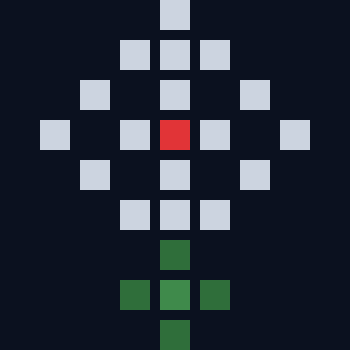
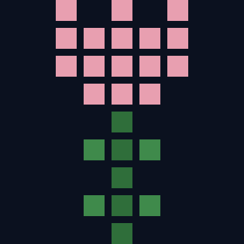
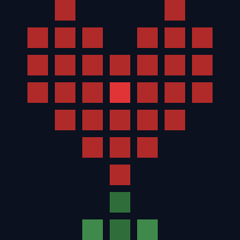
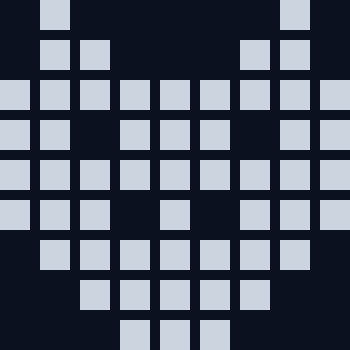
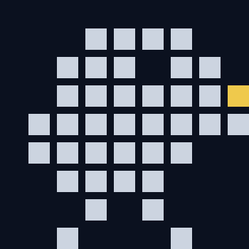
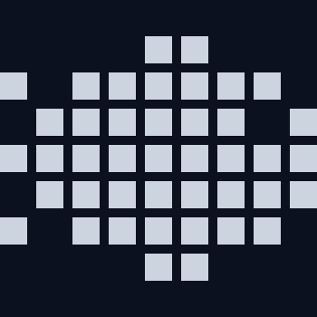

[A] DAILY — 曜日ごとのベースアイコン
週の7日それぞれに主役ピクセルを割り当てる。花々で週が始まり、週末は生き物で締める。

MON
月

TUE
火
WED
水

THU
木

FRI
金

SAT
土

SUN
日
[B] SEASONAL — 季節の演出
月（MM）でトリガー。ベースアイコン手前に粒子レイヤーが流れる。
SAKURA03 — 04月
桜の花びらがジグザグに舞い落ちる。春の標準演出。
RAIN06月
梅雨の細い雨が垂直に降る。音は無し。
FIREFLY07 — 08月 夜
蛍が柔らかく明滅。夏の夜のみ発動。
MAPLE10 — 11月
紅葉（赤・橙・金）が揺れながら舞い落ちる。
SNOW12 — 02月
白いピクセルがゆっくり斜めに降る。
SUNRISE01/01 — 01/03
初日の出の赤い光がゆっくり脈打つ。正月3日間限定。
[C] TIME OF DAY — 時刻のモード
時刻でトリガー。季節演出と重ねることも可能。
DAWN05 — 08時
暖色のグラデが上から薄くかかる。朝の静けさ。
NIGHT22 — 05時
上空が暗くなり、月と星がまたたく。
[D] MILESTONES — 記念日
連続記録・誕生日などのイベントで1日限定発動。
STREAK 77日連続
小さな火花が控えめに散る。週の継続を祝う。
STREAK 3030日連続
暖色グローが脈打ち、大きめの火花が外側へ。
BIRTHDAYユーザー誕生日
5色の紙吹雪が螺旋を描いて落ちる。当日のみ。